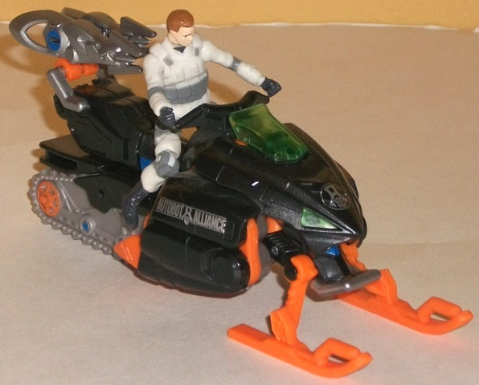
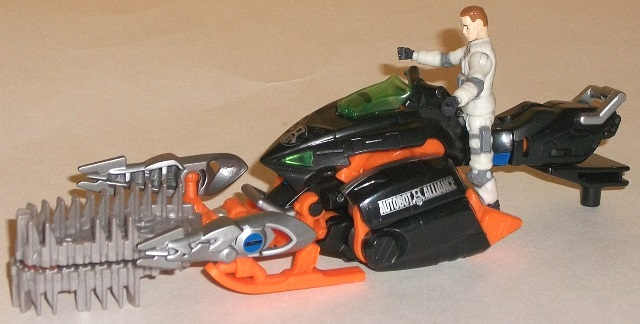
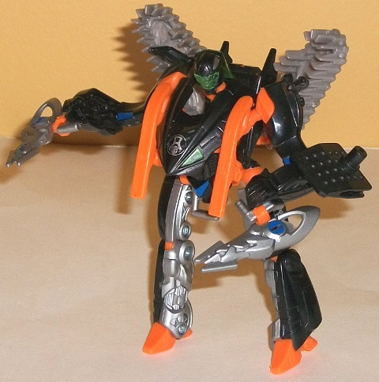
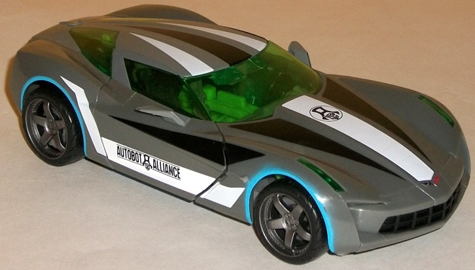
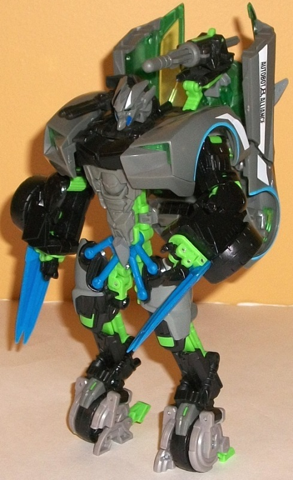

"Flash
Freeze Assault" set (K-Mart Exclusive)
"Flash
Freeze Assault" set (K-Mart Exclusive)
Set Price
: $30 U.S.
(NOTE: Because this set is composed of repaints,
this is not a full-blown review. This mainly covers any changes made to
the set and the color scheme, and merely compares it to the original versions
of these molds. For a review on the original DotM Icepick toy, go
here
.
For a review on RotF Human Alliance Sideswipe, go
here
.)
Icepick
w/ Sergeant Chaos



Allegiance
: Decepticon(?)
Size:
Human Alliance Deluxe
Difficulty of Transformation to Weapon
Mode
: Very Easy
Difficulty of Transformation to Robot
Mode:
Easy
Color Scheme
: Black, moderately
bright orange, and some moderately light milky gray, silver, dark blue,
and transparent pale bluish green
Individual Rating
: 7.3
Icepick here is a bit
of an enigma. He's clearly labeled in the bio as a Decepticon, but he has
both the K-Mart exclusive "Autobot Alliance" symbol printed on the front
of his vehicle mode/chest and "AUTOBOT ALLIANCE" clearly written on his
sides/upper legs! Me thinks marketing got a bit confused on this one. Regardless,
Icepick takes on a primarily Halloween-y black-and-light-orange color scheme
for this redeco-- and, given that it's an established color scheme, both
colors contrast mighty well against on each other. (As a bonus fan nod,
I think-- though this isn't confirmed-- that Icepick's color scheme this
time is based upon the KB Toys' exclusive deco on Universe 1.0
Snow
Cat
.) There's also a bit of boring gray plastic, though thankfully
that's just limited to his tread pieces-- he's got an impressive amount
of silver paint, with his C-clip weapons and inner legs doused in a nice
shiny shade of the color, along with a few other minor details. There's
also two more colors that are used as accents-- dark blue and a bit of
transparent light "minty" green for his windshield and headlights. The
dark blue stands out a bit more against the silver than the black, but
it helps bring a bit more variety to the color scheme. The transparent
"minty" green I'm a bit more lukewarm on, more because the particular shade
looks a bit "watered down" than any dislike of any green in the color scheme.
Icepick has no mold
changes to his main toy, but his human partner figurine-- Sergeant Chaos--
has a new sculpt, the most obvious change being that his helmet's off.
It's decent-looking enough, but honestly I prefer him with the snowmobile
helmet on. He looks more menacing/evil that way.
Icepick Tech Specs
:
Strength: 7.0
Intelligence: 3.0
Speed: 5.0
Endurance: 9.0
Rank: 6.0
Courage: 7.0
Fireblast: 8.0
Skill: 4.0
Sideswipe


Allegiance
: Autobot
Size
: Human Alliance "Large"
Difficulty of Transformation
: Medium
Color Scheme
: Moderately dark grayk,
black, light green, blue, transparent light green, and some light blue,
white, metallic gunmetal gray, light red, and light milky gray
Individual Rating
: 7.2
Approriately for the
"Flash Freeze Assault" 2-pack, Sideswipe gets a arctic-themed color scheme.
Gray is still his main color, but it's a slightly darker shade of the color
and not milky or anything (there IS some bleh light milky gray plastic,
but it's only used on a few minor parts). In vehicle mode they really spice
up all the gray with black and white racing stripes, light blue paint apps
around the wheels, and a rather nifty shade of green plastic for the windows.
All the colors really come together extremely well, and the light blue
is particularly eye-catching. He's also got an Autobot Alliance symbol
on the middle in the front of his windshield, and full blown "AUTOBOT ALLIANCE"
words along with the decal on the car doors. His exhaust pipes are also
red, which is another nice little detail, as is the nice metallic gunmetal
gray used for the wheel hubs. His license plate reads "AUTO-AL", an obvious
shortening of "Autobot Alliance." In robot mode he becomes even more eye-catching,
with light green and a really nice shade of blue being two major colors
of plastic that only show up in that mode. It's a little bit "G2-ish" in
that it may be a tad on the bright side (particularly for a movieverse
toy), but they DO contrast and complement against each other very well
and the blue really helps add to Sideswipe's "arctic" look in that mode.
No mold changes have
been made to Flash Freeze Assault Sideswipe.
Sideswipe Tech Specs
:
Strength: 8.0
Intelligence: 7.0
Speed: 8.0
Endurance: 6.0
Rank: 5.0
Courage: 7.0
Fireblast: 3.0
Skill: 9.0
Both Icepick and Sideswipe
(but particularly the latter) have great color schemes that are superior
to their mold's initial releases (though I think
Shadow
Blade Sideswipe
is SLIGHTLY better)-- it's a nice-looking set color-wise,
there's no doubt about that. It's also quite the value-- at $30 U.S., which
is the price of a larger Human Alliance toy, you're essentially getting
Icepick for free if you pick up this set. However, both of the molds are
pretty much the worst for their respective sizes in the subline (I'm not
sure why they repainted Sideswipe a THIRD time for this set too, since
there's
other, better, Human Alliance molds that haven't been redecoed
once
).
As such, if you're a completist for the Human Alliance stuff or love pretty,
unique color schemes over elegant Transformer designs this is a no-brainer,
but if you're more pick-and-choosy on the line it's probably best to pass
on this set, despite the color schemes and value.
"Flash Freeze Assault" Bio:
Sideswipe is a highly skilled fighter,
but without his human partner-- and on a road slick with ice-- he is at
a disadvantage. As Icepick and Sergeant Chaos close in for the finish,
Sideswipe snaps his blades out and prepares for the fight of his life.
Reviews by Beastbot
Back to Transformers:
Dark of the Moon Index